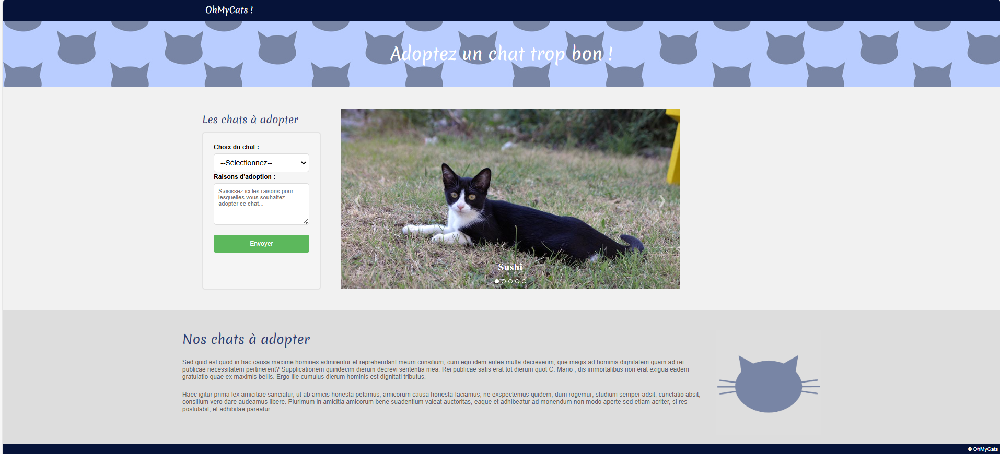
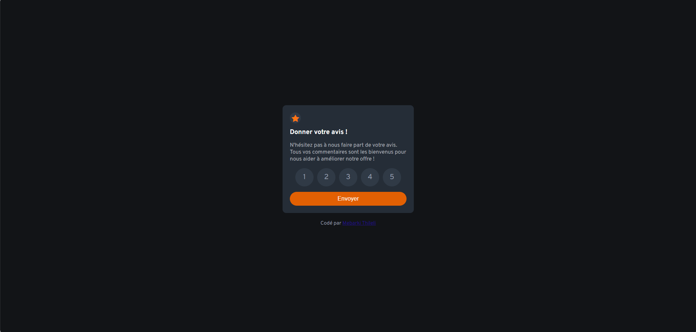

Portfolio MEBARKI Thileli
Accueil
BTS SIO
Ecole & entreprise
Réalisations et missions
Projets
Veille technologique
Contact
TP adoption des chats

Pour savoir plus
TP notation interactive

Pour savoir plus